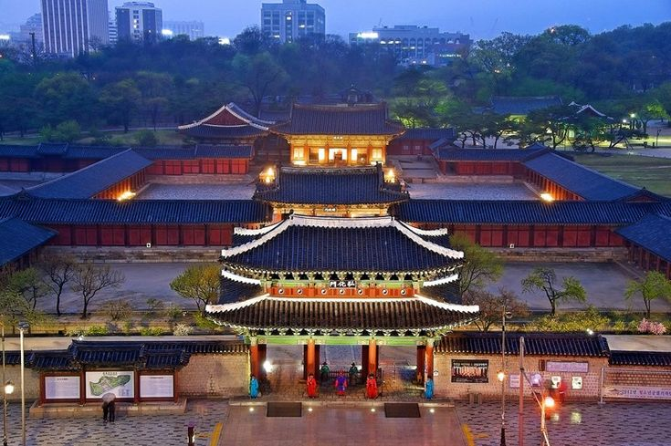
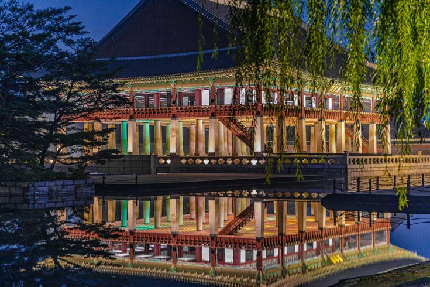
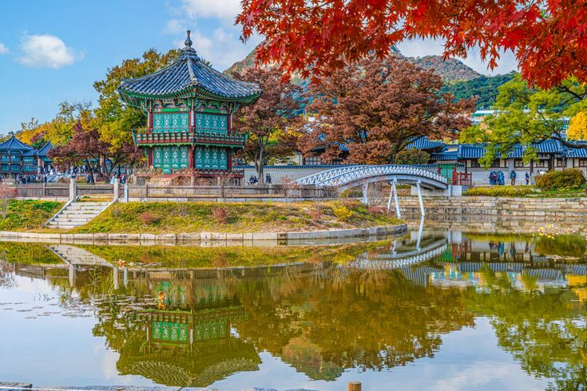
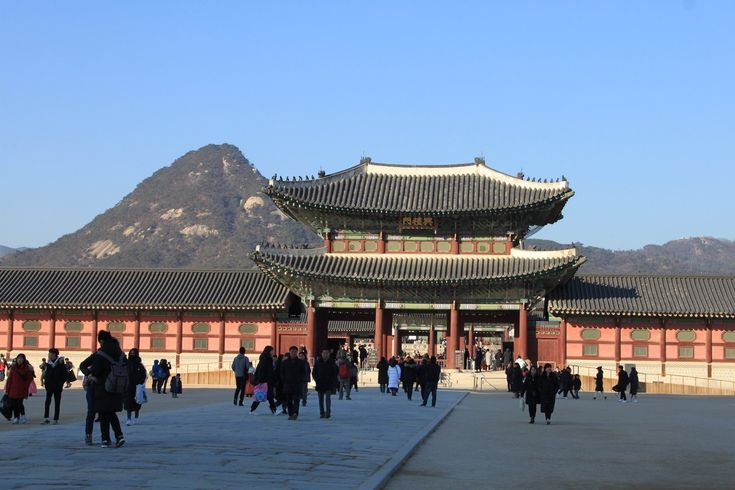
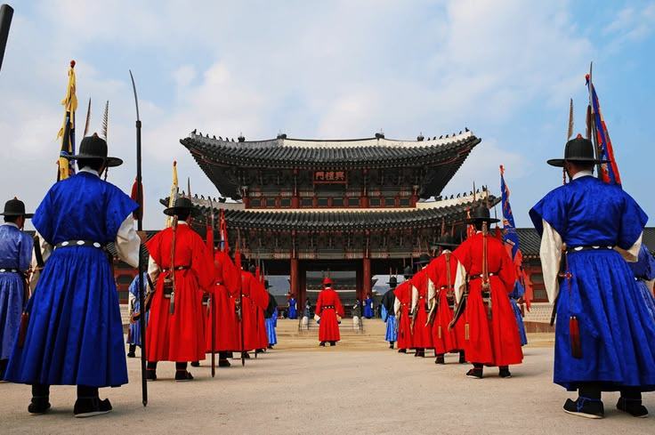
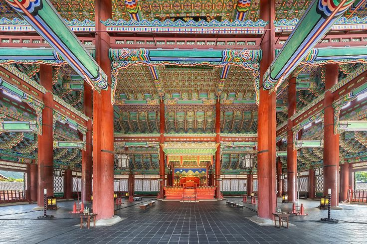

Palacio Gyeongbokgung

Gyeongbokgung fue el palacio principal durante la dinastía Joseon (1392-1910). Es uno de los cinco palacios de Seúl y ostenta 600 años de historia. Fue edificado en 1395 por el monarca que fundó la dinastía Joseon, Lee Seong-Gye, cuando trasladó la sede de la capital de la era Goryeo hasta Seúl. Al estar situado en la parte norte de Seúl, solía ser llamado también como “Palacio del Norte”. El palacio Gyeongbokgung tiene 501.676 metros cuadrados de superficie, dispuestos en forma de rectángulo. En el lado sur se halla la entrada principal, Gwanghwamun. Al norte, Sinmumun; al este, Yeongchumun; y al oeste, Geonchunmun. Dentro del palacio se encuentran pabellones como Geunjeongjeon, Gyotaejeon, Jagyeongjeon, Gyeonghoeru y Hyangwonjeong.
Geunjeongjeon, la sala principal, era el lugar en donde se realizaban las ceremonias oficiales y los funcionarios rendían los informes matutinos ante el rey. Frente al patio interno, se encuentran trazados tres senderos de granito. El del medio, levemente más elevado, era el trayecto por donde caminaba el monarca y los de los lados eran para su Corte. En el patio se levantan a cada lado los pumgyeseok (estelas de piedra con los cargos de los funcionarios públicos). Jagyeongjeon y Gyotaejeon eran las residencias de la madre del rey y la reina, respectivamente. Jagyeongjeon es famoso por su muro con flores y por su sipjangsaeng-gulttuk (bajorrelieve de la chimenea). La gulttuk tiene el reconocimiento de ser una de las chimeneas más bellas construidas durante el período Joseon y se encuentra en la lista de los Tesoros Nacionales. Gyotaejeon eran los aposentos de la reina, y el muro y la entrada posterior, que dan al monte Amisan, son particularmente atractivos a la vista. Además de esto, lo que acentúa aún más la elegancia del palacio Gyeongbokgung son sus estanques de flores de loto, Gyeonghoeru y Hyangwonjeoung.
Mas imagenes sobre el Palacio Gyeongbokgung





